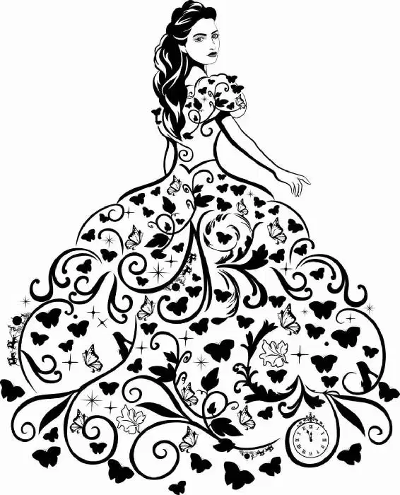

Inside the palace, the ballroom glittered and shined. Several large chandeliers were lit with a thousand candles, and uniformed servers made their way through the elegantly dressed crowds offering delicious appetizers. A band was set up in the far corner of the cavernous room, the conductor’s face serious as he led the musicians through their practiced pieces.
Standing a bit apart from the rest of the crowd was the prince, stuck between his father and the Grand Duke. He watched as princess after princess was announced and led into the ballroom. But he barely spared them more than a first glance. Each one looked much like the others, their dresses bright and elaborate, their faces painted. None of them was the girl from the woods.
“Why do you keep looking at the stairs?” his father asked. “Who are you waiting for?”
“No one,” Kit replied, not taking his gaze off the entrance.
King Frederick frowned. He was no fool. “It’s that girl from the forest, isn’t it?” he said. “That’s why you were so generous with the invitations.”
“Father!” Kit replied as though shocked. “It was for the people.”
The king couldn’t help smiling. At moments like this, Kit reminded him very much of the man he used to be, before the kingdom’s responsibilities had weighed him down. “I know you love the people, Kit,” he said kindly. “But I also know that your head has been turned.” His tone grew serious. “Listen to me, my boy. You’ve only met her once, in the forest.”
As if on cue, the Grand Duke turned to Kit, a princess and her escort behind him. “Your Highness,” he said. “May I present Princess Chelina of Zaragosa.”
Kit bowed deeply. But his gaze barely swept over the princess.
“You are as handsome as your picture, Your Highness,” Princess Chelina said. “And your little kingdom is enchanting.”
Hearing the Grand Duke clear his throat in warning, Kit turned and met Princess Chelina’s gaze. “I hope you will not find our little kingdom too confining.”
“It could be bigger… with the right friends. And enough soldiers,” she replied.
“I’m not sure I understand,” Kit said.
Princess Chelina put a hand on Kit’s arm. “Of course you do,” she said. “They tell me you are very brave in battle.”
Kit stifled a groan. This princess in front of him had no interest in him, just as he had no interest in her. All she wanted was the power an alliance provided. Kit certainly wanted the best for his kingdom, but he knew that this would not be won by war or strategic alliances. It would be won with kindness, courage, and love.
Suddenly, Kit noticed that while he and Princess Chelina had been talking, a hushed silence had fallen over the crowd. Everyone’s attention had been caught by a commotion at the grand staircase. As Kit turned to see what was going on, his breath caught in his throat.
For standing there, at the top of the stairs, was the girl from the woods.
Gone were her simple gown and her disheveled hair. Now she was wearing the most elegant dress Kit had ever seen. It took every ounce of his self-control for Kit not to run to her side. Instead, he bowed to Chelina. “Excuse me,” he said, walking away.
Behind him, Kit could hear the Grand Duke making apologies on his behalf.
As Ella stood at the top of the stairs, her heart pounded in her ears. The crowd was a sea of bright colors below her, everyone’s face a blur. Except for his. Except for Kit’s. She saw him almost immediately. He stood at the opposite end of the room, dressed in a cream-colored suit that made his shoulders seem broader and his face even more handsome. As if pulled by an invisible string, Ella made her way down the stairs. At the same time, she saw Kit maneuver his way through the crowd.
Finally, after what felt like the longest walk of her life, Ella found herself face-to-face with Kit. They stood at the edge of the dance floor, both momentarily at a loss for words. Kit seemed oddly nervous, almost tongue-tied at the sight of her. Despite the butterflies in her stomach, Ella smiled and said a silent thank you again to her fairy godmother.
“Mr. Kit . . .” Ella finally said.
Kit shook his head as if coming out of a dream. “It’s you… isn’t it?” he asked.
Ella nodded shyly. “Just so.”
“If I may— That is—” Kit stammered. “It would give me the greatest pleasure if you would, uh, that is, if you would do me the honor of letting me lead you through the—the next . . .” His voice trailed off, as though he was searching for the right word.
“Dance?” Ella guessed.
Kit nodded, relieved. “Yes, dance. That’s it.”
A wave of excitement washed over Ella. Nodding, she gave him a shy smile, and he held out his hand. She took it, and he drew her onto the dance floor.
“They are all looking at you,” Ella said, a bit confused.
But Kit shook his head. “Believe me, they are all looking at you.”
Then, before she could say another word, Kit placed his free hand gently on Ella’s hip. She took a sharp breath and met Kit’s gaze. He was staring down at her, his eyes full of wonder.
As the music began, they moved together. Soon other couples joined them on the dance floor. But Ella took no notice. She only had eyes for Kit. And while there were many things she wanted to say, Ella knew that she should just take in this perfect moment. So she let herself go, her steps in time with Kit’s, his hand warm in hers.
As Ella danced with her boy from the woods, she was unaware that her appearance was causing quite the fuss among certain guests. At the edge of the dance floor, Lady Tremaine stared at the girl, trying to figure out why she seemed so familiar. Beside her, Anastasia and Drisella were marveling at the girl’s gorgeous gown and were surprised when their mother snapped at them. “You must turn the prince’s head, you fools!” she hissed. “Get out there!”
“But no one’s asked us to dance,” Anastasia said.
Lady Tremaine sighed deeply. Seeing two gentlemen about to walk past, she shoved her daughters in front of them. The startled men bowed. Then, before they could protest, they found themselves being pushed onto the dance floor by Lady Tremaine. As she watched her daughters clumsily maneuver their way closer to the prince, she stifled a groan. Both girls batted their eyelashes and tried to smile alluringly. But the prince didn’t even notice. He could not take his eyes off the girl in his arms.
The crowd slowly exited the dance floor, leaving the prince and his partner alone. They made a beautiful pair as they swept over the floor, their steps in perfect sync. When the music came to a stop, there was a moment of silence, and then the crowd burst into applause, sure they had just witnessed the prince and his future princess in their first dance. The Grand Duke watched as Kit leaned down and whispered something into the girl’s ear. She nodded, and then the two of them walked off the floor, disappearing through one of the big ballroom doors.
Who is that girl? The Grand Duke started to panic in his spot on the balcony . Luckily, at that moment the Captain of the Guard returned. The Grand Duke had sent him to find out anything he could about the mystery woman.
“People are saying she is a princess,” the Captain reported. “Our prince seems quite taken with her. You do not approve?” he asked when he noticed the sour look on the other man’s face.
“He is already promised to the princess Chelina of Zaragosa!” the Grand Duke shouted manically.
